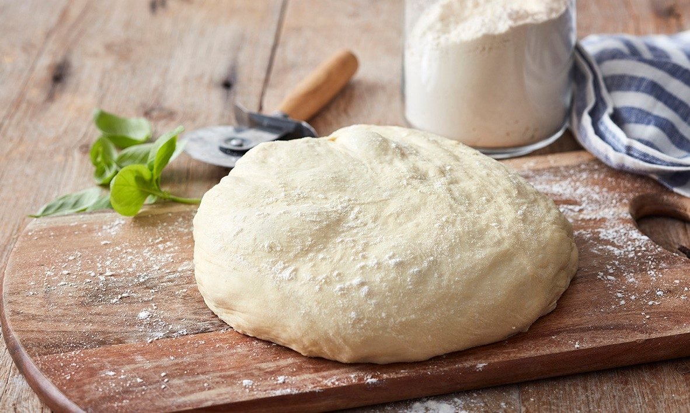

Home
Pizza Dough Recipe

Description
This simple and straightforward recipe will produce authentic, flavorful pizza every time! Whether you're baking the pizza in a pizza oven or conventional oven, your dinner guests will be impressed every time at the delicious flavor and texture this dough offers.
No special ingredients or tools required.
Ingredients
- 2 tsp. (7 g. sachet) dried yeast
- 250 ml lukewarm water
- 400 g bread flour, plus extra to dust
- 2 teaspoons salt
- 3 tablespoons olive oil
Directions
- Whisk together yeast and water. Let sit until frothy, about 5 minutes.
- Place flour and salt in a large bowl. Make a well in the center. Pour in the yeast mixture and olive oil. Using your hands, mix the dough until it comes together and it starting to smooth out. Turn out dough onto a lightly floured work surface and knead for a few minutes.
- Place dough into a lightly oiled bowl and cover with cling wrap. You can use the same one that had the dough in it before, but make sure you clean it. Set aside in a warm place to rise for 30 minutes to 1 hour, or until it has doubled in size.
- Turn dough out onto a lightly floured surface and knead gently for another 5 minutes. The dough should be smooth, supple, and elastic. Divide dough in half and roll or stretch pizza bases to their desired size and shape. Your dough is now ready for your favorite pizza topping!
Recommended Recipe: Pizza Sauce